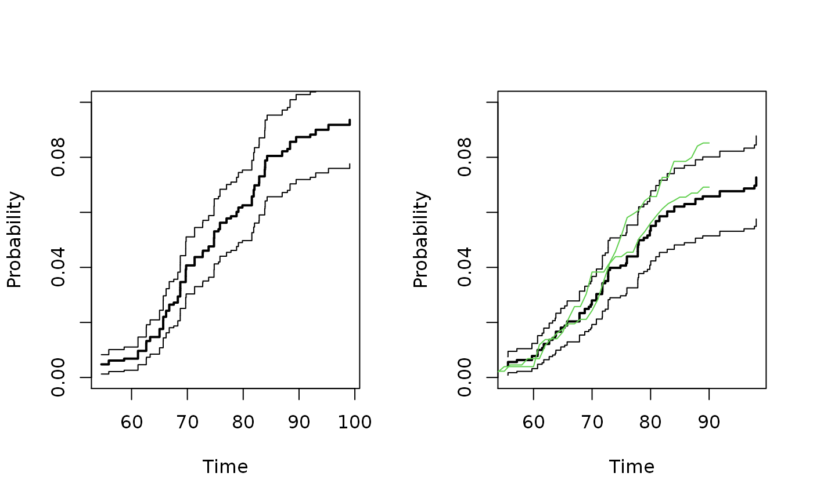

Estimation of concordance in bivariate competing risks data
bicomprisk(
formula,
data,
cause = c(1, 1),
cens = 0,
causes,
indiv,
strata = NULL,
id,
num,
max.clust = 1000,
marg = NULL,
se.clusters = NULL,
wname = NULL,
prodlim = FALSE,
messages = TRUE,
model,
return.data = 0,
uniform = 0,
conservative = 1,
resample.iid = 1,
...
)Formula with left-hand-side being a Event object (see example below) and the left-hand-side specying the covariate structure
Data frame
Causes (default (1,1)) for which to estimate the bivariate cumulative incidence
The censoring code
causes
indiv
Strata
Clustering variable
num
max number of clusters in timereg::comp.risk call for iid decompostion, max.clust=NULL uses all clusters otherwise rougher grouping.
marginal cumulative incidence to make stanard errors for same clusters for subsequent use in casewise.test()
to specify clusters for standard errors. Either a vector of cluster indices or a column name in data. Defaults to the id variable.
name of additonal weight used for paired competing risks data.
prodlim to use prodlim estimator (Aalen-Johansen) rather than IPCW weighted estimator based on comp.risk function.These are equivalent in the case of no covariates. These esimators are the same in the case of stratified fitting.
Control amount of output
Type of competing risk model (default is Fine-Gray model "fg", see comp.risk).
Should data be returned (skipping modeling)
to compute uniform standard errors for concordance estimates based on resampling.
for conservative standard errors, recommended for larger data-sets.
to return iid residual processes for further computations such as tests.
Additional arguments to timereg::comp.risk function
Scheike, T. H.; Holst, K. K. & Hjelmborg, J. B. Estimating twin concordance for bivariate competing risks twin data Statistics in Medicine, Wiley Online Library, 2014 , 33 , 1193-204
library("timereg")
## Simulated data example
prt <- simnordic.random(2000,delayed=TRUE,ptrunc=0.7,
cordz=0.5,cormz=2,lam0=0.3)
## Bivariate competing risk, concordance estimates
p11 <- bicomprisk(Event(time,cause)~strata(zyg)+id(id),data=prt,cause=c(1,1))
#> Strata 'MZ'
#> Strata 'DZ'
p11mz <- p11$model$"MZ"
p11dz <- p11$model$"DZ"
par(mfrow=c(1,2))
## Concordance
plot(p11mz,ylim=c(0,0.1));
plot(p11dz,ylim=c(0,0.1));
## entry time, truncation weighting
### other weighting procedure
prtl <- prt[!prt$truncated,]
prt2 <- ipw2(prtl,cluster="id",same.cens=TRUE,
time="time",cause="cause",entrytime="entry",
pairs=TRUE,strata="zyg",obs.only=TRUE)
prt22 <- fast.reshape(prt2,id="id")
prt22$event <- (prt22$cause1==1)*(prt22$cause2==1)*1
prt22$timel <- pmax(prt22$time1,prt22$time2)
ipwc <- timereg::comp.risk(Event(timel,event)~-1+factor(zyg1),
data=prt22,cause=1,n.sim=0,model="rcif2",times=50:90,
weights=prt22$weights1,cens.weights=rep(1,nrow(prt22)))
p11wmz <- ipwc$cum[,2]
p11wdz <- ipwc$cum[,3]
lines(ipwc$cum[,1],p11wmz,col=3)
lines(ipwc$cum[,1],p11wdz,col=3)
